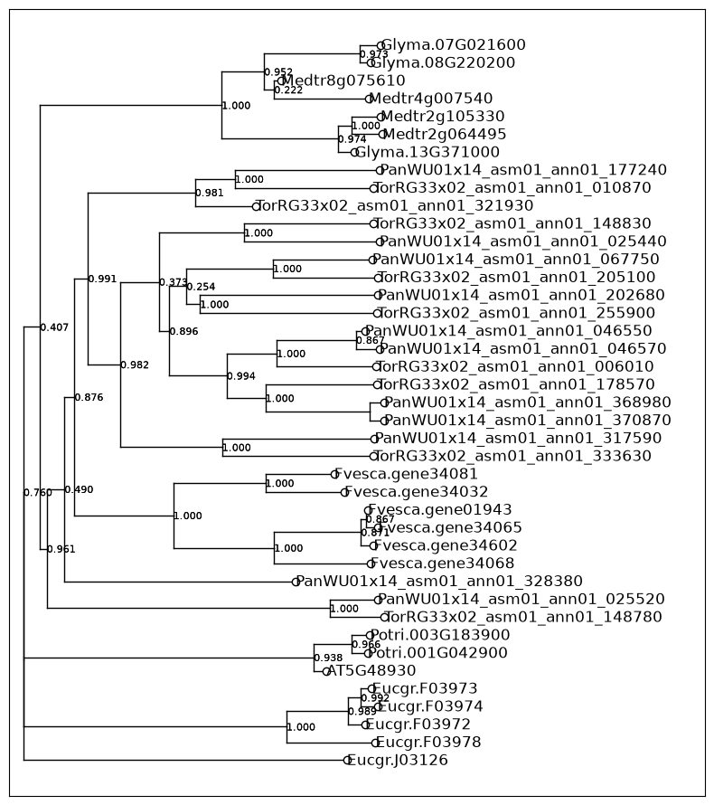
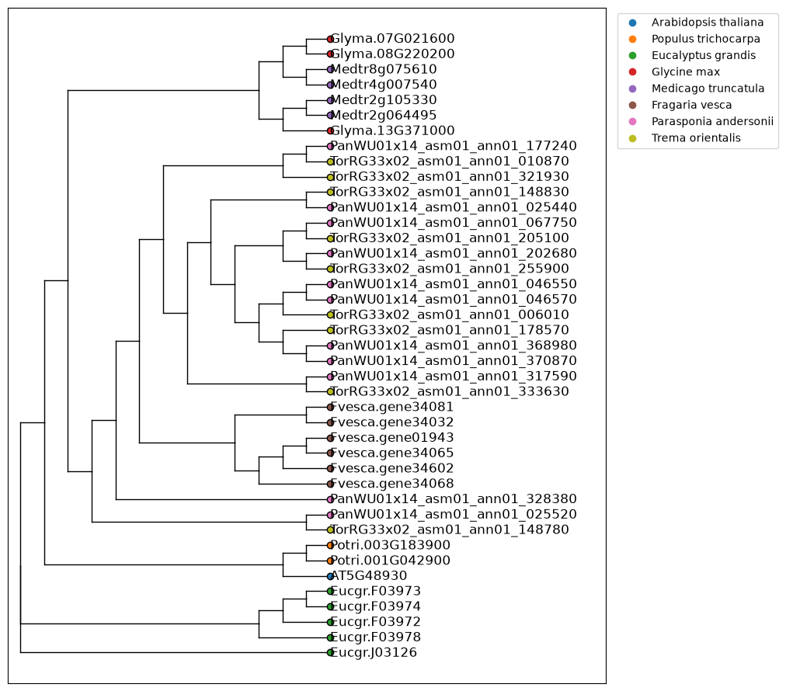
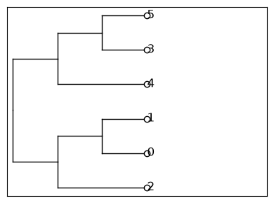

Trees¶
A Tree is a recursive node: every node has a name, a branch length and a list of children. Trees
are read from and written to Newick, and can be plotted with treeplot().
from matplotlib import pyplot as plt
from picea import Tree, treeplot
Plotting¶
This gene tree of hydroxycinnamoyl transferase (HCT) homologs has branch lengths and support values as internal node names.
hct = Tree.from_newick(filename="data/tree.newick")
len(hct.leaves)
41
hct.rename_leaves(lambda name: name.removesuffix(".1"))
fig, ax = plt.subplots(figsize=(8, 9))
treeplot(hct, style="square", ax=ax);

Leaf markers can be styled per leaf with a function, for example to color leaves by species. Without branch lengths the tree is drawn as a cladogram.
from matplotlib.lines import Line2D
species = {
"AT": ("Arabidopsis thaliana", "tab:blue"),
"Potri": ("Populus trichocarpa", "tab:orange"),
"Eucgr": ("Eucalyptus grandis", "tab:green"),
"Glyma": ("Glycine max", "tab:red"),
"Medtr": ("Medicago truncatula", "tab:purple"),
"Fvesca": ("Fragaria vesca", "tab:brown"),
"PanWU": ("Parasponia andersonii", "tab:pink"),
"TorRG": ("Trema orientalis", "tab:olive"),
}
def leaf_color(leaf: Tree) -> str:
return next(color for prefix, (_, color) in species.items() if leaf.name.startswith(prefix))
fig, ax = plt.subplots(figsize=(8, 9))
treeplot(hct, style="square", branchlengths=False, node_labels=False, leaf_marker_fill=leaf_color, ax=ax)
ax.legend(
handles=[Line2D([], [], marker="o", linestyle="", color=color, label=name) for name, color in species.values()],
loc="upper left",
bbox_to_anchor=(1.01, 1),
);

From hierarchical clustering¶
Trees can also be created from a fitted scikit-learn
AgglomerativeClustering
model.
import numpy as np
from sklearn.cluster import AgglomerativeClustering
X = np.array([[1, 2], [1, 4], [1, 0], [4, 2], [4, 4], [4, 0]])
clustering = AgglomerativeClustering().fit(X)
cluster_tree = Tree.from_sklearn(clustering)
cluster_tree.to_newick()
'((2,(0,1)),(4,(3,5)));'
fig, ax = plt.subplots(figsize=(4, 3))
treeplot(cluster_tree, style="square", branchlengths=False, ax=ax);
